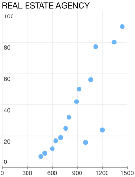
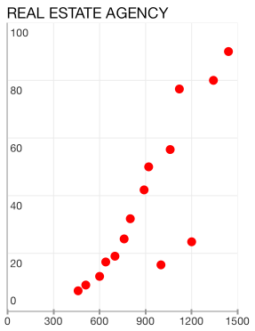

Chart Series: Scatter
TKChartScatterSeries plots its data along two axes. Scatter series identify the position of each point using two dimentional values - XValue and YValue for the horizontal and vertical axes respectively, just like in the typical Cartesian coordinate system. Here is how to create a TKChartScatterSeries and populate them manually:
Objective-C
NSArray *xValues = @[ @460, @510, @600, @640, @700, @760, @800, @890, @920, @1000, @1060, @1120, @1200, @1342, @1440];
NSArray *yValues = @[ @7, @9, @12, @17, @19, @25, @32, @42, @50, @16, @56, @77, @24, @80, @90];
NSMutableArray *scatterPoints = [[NSMutableArray alloc] init];
for (int i = 0; i<xValues.count; i++) {
[scatterPoints addObject:[[TKChartDataPoint alloc] initWithX:xValues[i] Y:yValues[i]]];
}
TKChartScatterSeries *series = [[TKChartScatterSeries alloc] initWithItems:scatterPoints];
[chart addSeries:series];
Swift
let xValues = [460, 510, 600, 640, 700, 760, 800, 890, 920, 1000, 1060, 1120, 1200, 1342, 1440]
let yValues = [7, 9 ,12, 17, 19, 25, 32, 42, 50, 16, 56, 77, 24, 80, 90]
var scatterPoints = [TKChartDataPoint]()
for var i = 0; i < xValues.count; ++i {
scatterPoints.append(TKChartDataPoint(x: xValues[i], y: yValues[i]))
}
let series = TKChartScatterSeries(items: scatterPoints)
chart.addSeries(series)

Customizing the visual appearance
In addition, you can change a point background color by using the following lines of code:
Objective-C
TKChartScatterSeries *series = [[TKChartScatterSeries alloc] initWithItems:scatterPoints];
TKChartPaletteItem *palleteItem = [[TKChartPaletteItem alloc] init];
palleteItem.fill = [TKSolidFill solidFillWithColor:[UIColor redColor]];
series.style.palette = [[TKChartPalette alloc] init];
[series.style.palette addPaletteItem:palleteItem];
[chart addSeries:series];
Swift
let series = TKChartScatterSeries(items: scatterPoints)
let paletteItem = TKChartPaletteItem()
paletteItem.fill = TKSolidFill(color: UIColor.redColor())
series.style.palette = TKChartPalette()
series.style.palette.addPaletteItem(paletteItem)
chart.addSeries(series)

Configure input and selection of line series
Here is how to configure the distance between finger touch and line to perform selection:
Objective-C
TKChartScatterSeries *series = [[TKChartScatterSeries alloc] initWithItems:scatterPoints];
series.selectionMode = TKChartSeriesSelectionModeDataPoint;
series.marginForHitDetection = 30.f;
[chart addSeries:series];
Swift
let series = TKChartScatterSeries(items: scatterPoints)
series.selectionMode = TKChartSeriesSelectionModeDataPoint
series.marginForHitDetection = 30.0
chart.addSeries(series)